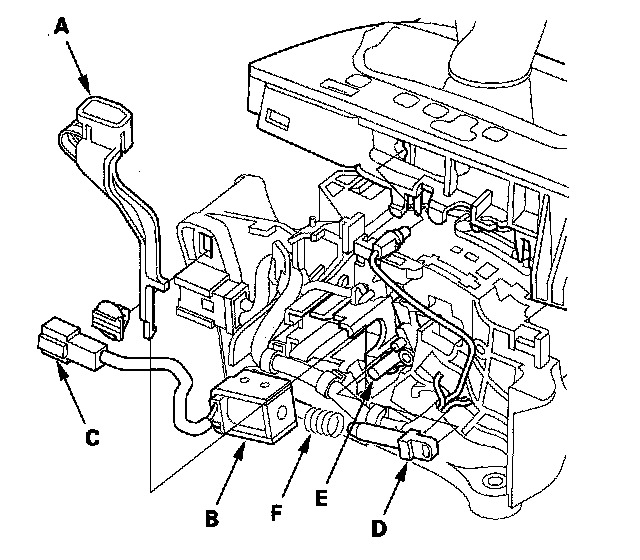

Shift Interlock Solenoid: Service and Repair
Shift Lock Solenoid Replacement1. Remove the shift lever.
2. Remove the shift lock release (A).

3. Remove the shift lock solenoid (B) and harness connector (C) and replace the shift lock solenoid.
4. Apply silicone grease to joint of the new shift lock solenoid plunger (D) and shift lock stop (E).
5. Install the shift lock solenoid plunger and plunger spring (F) in the shift lock solenoid.
6. Install the new shift lock solenoid by aligning the joint of the shift lock solenoid plunger with the tip of the shift lock stop, then push the shift lock solenoid into the shift lever bracket base securely.
7. Install the shift lock solenoid connector on the shift lever bracket base.
8. Install the shift lock release.
9. Install the shift lever.